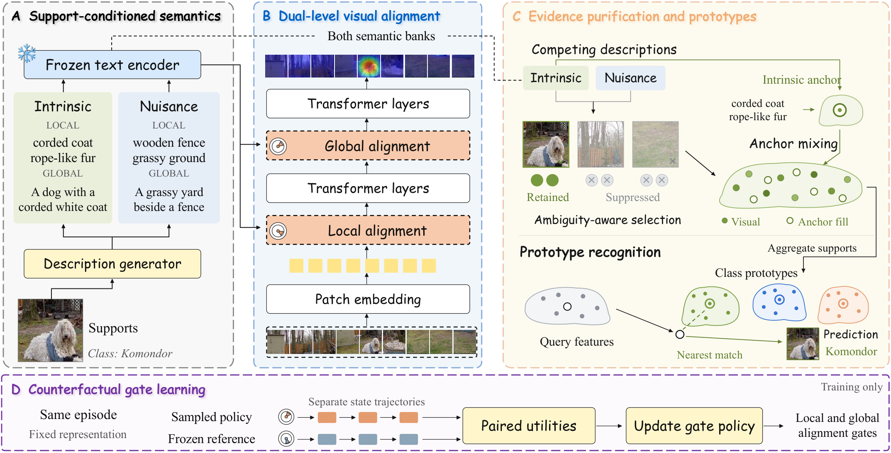

DVLA-RL++: Dual-Level Vision-Language Alignment with Reinforcement Learning Gating for Few-Shot Learning
Journal extension of DVLA-RL (ICLR 2026) IEEE TPAMI · under review
TL;DR

Support-evidence contamination
A support image may contain both a discriminative object part and a background pattern that agrees with its class description. Treating both as positive evidence reinforces contextual shortcuts instead of resolving visual ambiguity.
Complementary semantic purification
Intrinsic and nuisance descriptions are generated from labeled supports only and compared in a shared embedding space. An ambiguity-dependent rejection margin and a sparse allocation rule select supported visual tokens, and the rejected mass is assigned to an intrinsic semantic anchor.
Counterfactual RL gating
A stochastic fusion policy is trained against an independently executed reference trajectory on the same episode, with a reward that combines classification utility and nuisance exposure. At inference only the deterministic mean policy runs.
Which support evidence should define a class prototype when both object parts and incidental context agree with the class description?
How much semantic information should enter each visual layer, and how can that decision be learned from a paired, low-variance training signal?
Does deciding both improve recognition and robustness? DVLA-RL++ is the most accurate method in all 18 standard, fine-grained and cross-domain settings, gains 1.4 points on average over DVLA-RL, and shrinks the clean-to-shift accuracy drop from 5.9 to 2.2 points on miniImageNet.
Why does a richer description not guarantee better evidence?
Few-shot learning builds class representations from a handful of labeled supports and compares separate queries with these summaries, so the quality of the evidence entering a prototype directly affects recognition. Our conference framework DVLA-RL combines local attributes and global descriptions with reinforcement-learning gates for hierarchical alignment. Nevertheless, a richer description and a more flexible fusion rule do not guarantee that the visual evidence emphasized by the model belongs to the class rather than to its context.
A bird among reeds illustrates the difficulty. Striped plumage shares visual patterns with vertical reeds and a reed plume. Both descriptions are factually correct and agree with support features, yet contextual cues become unreliable when the background changes. The reed plume exposes a subtler failure: its intrinsic agreement is high, but its advantage over the nuisance agreement is small, so a positive relative score alone would retain this ambiguous token while the rejection margin excludes it.
Positive image-text agreement does not determine which evidence should define a class. Semantic assistance therefore requires both comparison against a competing explanation and rejection of ambiguous evidence.
DVLA-RL++ keeps dual-level alignment and adds two decisions
An episode contains labeled supports and separate queries from disjoint categories. Class names are available as semantic supervision, whereas query labels are used only for training objectives and evaluation metrics. The method retains the dual-level semantic alignment and scalar attention gate of DVLA-RL, but replaces unconditional support averaging with selective aggregation and learns how much semantic information to inject with a policy whose decisions depend on supports and preceding actions. The additional adaptation is fully specified before a test query is processed and needs no query labels.
Semantic banks
Labeled supports generate intrinsic and nuisance phrases at local and global granularity. Generation is cached once per episode and never sees a query.
Gated alignment
Intrinsic semantics guide local and global visual alignment through RL-gated attention blocks at two selected layers.
Purified prototypes
Competing bank responses select support evidence, which is mixed with an intrinsic anchor and aggregated into class prototypes.
Counterfactual policy
Sampled and frozen-reference gates follow separate trajectories, and their paired utilities update the gate policy alone.
One scalar action per layer
Let \(Z_\ell\) denote image tokens and \(T_\ell\) the projected intrinsic semantic tokens concatenated across all candidate classes. The image-guided and text-guided contexts are mixed by the gate action \(a_\ell\in[0,1]\),
\[ V_\ell=\operatorname{Attn}(T_\ell W_q, Z_\ell W_k^v, Z_\ell W_v^v),\qquad S_\ell=\operatorname{Attn}(T_\ell W_q, T_\ell W_k^t, T_\ell W_v^t),\qquad B_\ell(a_\ell)=a_\ell V_\ell+(1-a_\ell)S_\ell, \]
and the pooled context is broadcast to the image tokens before the next block, \(Z_{\ell+1}=\big[F_{\phi,\ell}([Z_\ell+\mathbf{1}\,\mathrm{mean}(B_\ell);\,B_\ell])\big]_{\mathrm{img}}\). The same semantic tokens subsequently process every query, so no query class is needed to choose a description, and the support-derived schedule keeps query representations compatible with the prototypes. Classification uses cosine logits between a normalized query feature and the class prototypes with temperature \(\tau_c\).
Scoring projections are calibrated on labeled base supports before policy training and then frozen, so the policy cannot lower its nuisance cost by rotating the scoring geometry.
Complementary semantic purification
We distinguish semantic levels from evidence roles. Local attributes and global descriptions specify the granularity of alignment, whereas intrinsic and nuisance banks specify whether a description explains the class or its incidental context. "Striped plumage" and "vertical reeds" describe different evidence within the same image, and a nuisance phrase is neither a negated sentence nor a competing class label. Nuisance phrases are used only for scoring and policy state construction.
Compare, reject, allocate, anchor
Bank responses use size-normalized log-sum-exp aggregation so that bank size alone cannot increase evidence, and the signed evidence of a token is the difference between its intrinsic and nuisance responses, \(d_{c,k,i}=u^{+}_{c,k,i}-u^{-}_{c,k,i}\). The rejection margin grows with the ambiguity between the two explanations,
\[ o_c=\tfrac{1}{2}\big(1+\max_{r,t}(e^{+}_{c,r})^{\top}e^{-}_{c,t}\big),\qquad \xi_c=\xi_0+\kappa_o\,o_c, \]
and the allocator projects the margin-corrected evidence onto the capped simplex,
\[ \mathbf{a}_{c,k}=\underset{a\ge 0,\;\mathbf{1}^{\top}a\le 1}{\arg\min}\;\tfrac{1}{2}\Big\|a-\frac{\mathbf{d}_{c,k}-\xi_c\mathbf{1}}{\tau_s}\Big\|_2^2,\qquad \rho_{c,k}=\mathbf{1}^{\top}\mathbf{a}_{c,k}. \]
Its threshold solution implies that retained tokens necessarily clear the rejection margin, and unused mass is neutral rather than redistributed among rejected tokens. With a mixing coefficient \(\lambda\) and the normalized intrinsic anchor \(r_c\), the raw support representation is \(w_{c,k}=\lambda\sum_i a_{c,k,i}z_{c,k,i}+(1-\lambda\rho_{c,k})\,r_c\), so a support with no retained token contributes exactly its anchor. The averaged representation is normalized into the prototype \(p_c\).
Prototype stability. If nuisance scores have mean at most \(-\Delta\) with conditionally sub-Gaussian error of scale \(\sigma\), the expected retained nuisance mass decays as \(\exp[-(\Delta+\xi_c)^2/2\sigma^2]\), and the normalized prototype error is at most twice the raw bound. No independence among tokens is required.
Counterfactual reinforcement-learning gating
Training alternates representation learning and policy learning. A policy batch is collected with the representation, scorer, text encoder and reference policy frozen. The sampled policy and the frozen DVLA-RL reference follow separate trajectories from the same initial inputs, and their final prototypes and query predictions define a paired reward. A policy update changes only gate parameters, a separate classification step updates the representation under stopped actions, and stale trajectories are discarded whenever the representation changes.
Paired returns on the same episode
The policy observes pooled support features, the bank summaries, rejection statistics and the layer index, and keeps the scalar action space of the original gate through a mean-bounded Beta distribution, \(a_\ell\sim\mathrm{Beta}\big(\kappa_g p_\theta(\mathcal{H}_\ell),\,\kappa_g[1-p_\theta(\mathcal{H}_\ell)]\big)\). The reference executes its own mean actions \(a^0_\ell\) and never receives states produced by sampled actions. Nuisance exposure is measured on post-action support tokens, \(C(\mathbf{a})=\frac{1}{LNK}\sum_{\ell,c,k}\frac{1}{M_\ell}\sum_i[\xi_c-d^{\mathrm{post}}_{\ell,c,k,i}(\mathbf{a})]_+\), and the paired reward and advantage are
\[ R(\mathbf{a})=-\mathcal{L}_{\mathrm{cls}}(\mathbf{a})-\gamma\,C(\mathbf{a})-\frac{\eta}{L}\sum_\ell (a_\ell-a^0_\ell)^2,\qquad R_0=-\mathcal{L}_{\mathrm{cls}}(\mathbf{a}^0)-\gamma\,C(\mathbf{a}^0),\qquad A_\ell=\operatorname{sg}\big[R(\mathbf{a})-R_0-b_\omega(\mathcal{H}_\ell)\big]. \]
With action-independent reference randomness, differentiable positive policy densities and fixed environment parameters, the score-function estimator \(\sum_\ell A_\ell\nabla_\theta\log\pi_\theta(a_\ell\mid\mathcal{H}_\ell)\) is unbiased for the gradient of the expected reward (Proposition 1). Repeated minibatch updates use the clipped surrogate \(\mathcal{L}_{\mathrm{CF\text{-}PPO}}=-\mathbb{E}\sum_\ell\min(r_\ell A_\ell,\,\mathrm{clip}(r_\ell,1-\epsilon_p,1+\epsilon_p)A_\ell)\), and the deviation of its gradient from the importance-weighted gradient is bounded in terms of the active clipped samples.
Detaching a tensor is an implementation operation, whereas conditional action independence is a statistical condition. The separate reference rollout provides the latter, which stopping gradients through an action-dependent reference would not.
State-of-the-art accuracy on standard, fine-grained and cross-domain benchmarks
The visual backbone is Visformer-Tiny with 224×224 inputs, the frozen text encoder is the CLIP ViT-B/16 text encoder, and Qwen2.5-VL-32B generates attribute-level and description-level text from labeled supports. For each setting, 2,000 5-way tasks are sampled from novel classes with 15 queries per class, and we report mean accuracy with its 95% confidence interval. Competitor results are quoted from their original reports.
| Method | Venue | miniImageNet | tieredImageNet | CIFAR-FS | |||
|---|---|---|---|---|---|---|---|
| 1-shot | 5-shot | 1-shot | 5-shot | 1-shot | 5-shot | ||
| ProtoNet | NeurIPS 2017 | 62.39 ±0.21 | 80.53 ±0.14 | 68.23 ±0.23 | 84.03 ±0.16 | 72.20 ±0.70 | 83.50 ±0.50 |
| AM3 | NeurIPS 2019 | 65.30 ±0.49 | 78.10 ±0.36 | 69.08 ±0.47 | 82.58 ±0.31 | - | - |
| DeepEMD | CVPR 2020 | 65.91 ±0.82 | 82.41 ±0.56 | 71.16 ±0.87 | 86.03 ±0.58 | - | - |
| SUN | ECCV 2022 | 67.80 ±0.45 | 83.25 ±0.30 | 72.99 ±0.50 | 86.74 ±0.33 | - | - |
| FewTURE | NeurIPS 2022 | 68.02 ±0.88 | 84.51 ±0.53 | 72.96 ±0.92 | 86.43 ±0.67 | 72.80 ±0.88 | 86.14 ±0.64 |
| SVAE | CVPR 2022 | 74.84 ±0.23 | 83.28 ±0.40 | 76.98 ±0.65 | 85.77 ±0.50 | - | - |
| Meta-AdaM | NeurIPS 2023 | 59.89 ±0.49 | 77.92 ±0.43 | 65.31 ±0.48 | 85.24 ±0.35 | - | - |
| ProtoDiff | NeurIPS 2023 | 66.63 ±0.21 | 83.48 ±0.15 | 72.95 ±0.24 | 85.15 ±0.18 | - | - |
| CPEA | ICCV 2023 | 71.97 ±0.65 | 87.06 ±0.38 | 76.93 ±0.70 | 90.12 ±0.45 | 77.82 ±0.66 | 88.98 ±0.45 |
| SP | CVPR 2023 | 72.31 ±0.40 | 83.42 ±0.30 | 78.03 ±0.46 | 88.55 ±0.32 | 82.18 ±0.40 | 88.24 ±0.32 |
| ALFA | TPAMI 2024 | 66.61 ±0.28 | 81.43 ±0.25 | 70.29 ±0.40 | 86.17 ±0.35 | 76.32 ±0.43 | 86.73 ±0.31 |
| LastShot | TPAMI 2024 | 67.35 ±0.20 | 82.58 ±0.14 | 72.43 ±0.23 | 85.82 ±0.16 | 76.76 ±0.21 | 87.49 ±0.12 |
| MetaKernel | TPAMI 2024 | 66.9 ±0.3 | 81.3 ±0.2 | - | - | 76.1 ±0.4 | 86.9 ±0.5 |
| SIFT | IJCV 2024 | 77.31 ±0.67 | 86.95 ±0.53 | 77.86 ±0.77 | 89.89 ±0.52 | - | - |
| SemFew | CVPR 2024 | 78.94 ±0.66 | 86.49 ±0.50 | 82.37 ±0.77 | 89.89 ±0.52 | 84.34 ±0.67 | 89.11 ±0.54 |
| ECER | AAAI 2025 | 81.14 ±0.15 | - | 81.81 ±0.51 | - | 86.01 ±0.35 | - |
| CPL | TPAMI 2025 | 72.82 ±0.61 | 87.93 ±0.37 | 78.05 ±0.70 | 90.89 ±0.44 | 78.82 ±0.65 | 89.98 ±0.44 |
| FRN+IAM | TPAMI 2025 | 66.96 ±0.19 | 83.19 ±0.13 | 71.85 ±0.22 | 86.55 ±0.15 | - | - |
| DVLA-RL | ICLR 2026 | 81.69 ±0.36 | 88.25 ±0.28 | 83.02 ±0.43 | 91.71 ±0.29 | 87.18 ±0.40 | 90.59 ±0.31 |
| DVLA-RL++ | Ours | 83.41 ±0.34 | 89.63 ±0.26 | 84.57 ±0.41 | 92.89 ±0.27 | 88.70 ±0.38 | 91.75 ±0.29 |
5-way accuracy (%) with 95% confidence intervals on miniImageNet, tieredImageNet and CIFAR-FS.
| Method | Venue | CUB | Stanford Cars | Stanford Dogs | |||
|---|---|---|---|---|---|---|---|
| 1-shot | 5-shot | 1-shot | 5-shot | 1-shot | 5-shot | ||
| ProtoNet | NeurIPS 2017 | 63.44 ±0.56 | 83.17 ±0.35 | 45.01 ±0.49 | 87.19 ±0.31 | 41.61 ±0.50 | 76.78 ±0.36 |
| FRN | CVPR 2021 | 83.55 ±0.19 | 92.92 ±0.10 | 58.90 ±0.22 | 79.65 ±0.15 | 49.37 ±0.20 | 67.13 ±0.17 |
| DAN | AAAI 2022 | 72.89 ±0.50 | 86.60 ±0.31 | 70.21 ±0.50 | 85.55 ±0.31 | 59.81 ±0.50 | 77.19 ±0.35 |
| MFGN | IJCAI 2022 | 84.01 ±0.39 | 84.01 ±0.39 | - | - | 74.81 ±0.44 | 86.52 ±0.26 |
| TDM | CVPR 2022 | 84.36 ±0.19 | 93.37 ±0.10 | 68.36 ±0.22 | 86.14 ±0.13 | 57.64 ±0.22 | 75.03 ±0.16 |
| BSFA | TCSVT 2023 | 86.00 ±0.41 | 92.53 ±0.23 | 88.93 ±0.38 | 95.20 ±0.20 | 69.58 ±0.50 | 82.59 ±0.33 |
| MLI | TIP 2024 | 85.94 ±0.42 | 93.50 ±0.29 | - | - | 76.32 ±0.47 | 88.25 ±0.27 |
| C2-Net | AAAI 2024 | 83.31 ±0.41 | 92.18 ±0.23 | 88.96 ±0.37 | 95.16 ±0.20 | 75.50 ±0.49 | 87.65 ±0.28 |
| SUITED | AAAI 2025 | 86.02 ±0.47 | 94.13 ±0.24 | 89.97 ±0.36 | 96.53 ±0.16 | 76.55 ±0.47 | 88.86 ±0.27 |
| FRN+TDM+IAM | TPAMI 2025 | 84.84 ±0.18 | 93.60 ±0.10 | - | - | - | - |
| DVLA-RL | ICLR 2026 | 91.93 ±0.28 | 95.06 ±0.19 | 92.95 ±0.24 | 96.59 ±0.15 | 89.64 ±0.30 | 91.42 ±0.25 |
| DVLA-RL++ | Ours | 94.31 ±0.26 | 96.28 ±0.17 | 95.13 ±0.22 | 97.14 ±0.14 | 92.05 ±0.28 | 92.67 ±0.23 |
5-way accuracy (%) with 95% confidence intervals on CUB-200-2011, Stanford Cars and Stanford Dogs.
| Method | Venue | CUB | Places | ChestX | |||
|---|---|---|---|---|---|---|---|
| 1-shot | 5-shot | 1-shot | 5-shot | 1-shot | 5-shot | ||
| GNN | ICLR 2018 | 44.40 ±0.68 | 62.87 ±0.65 | 52.42 ±0.80 | 70.91 ±0.65 | 22.00 ±0.46 | 25.27 ±0.59 |
| FWT | ICLR 2020 | 45.50 ±0.46 | 64.97 ±0.68 | 53.44 ±0.79 | 70.70 ±0.67 | 22.04 ±0.44 | 25.18 ±0.45 |
| AFA | ECCV 2022 | 46.86 ±0.70 | 68.25 ±0.65 | 54.04 ±0.75 | 76.21 ±0.60 | 22.92 ±0.20 | 25.02 ±0.20 |
| UCD | NeurIPS 2022 | 40.65 ±0.68 | 58.54 ±0.70 | 51.84 ±0.72 | 72.19 ±0.60 | 22.64 ±0.40 | 26.26 ±0.45 |
| ATA | AIJ 2023 | 45.00 ±0.50 | 66.22 ±0.50 | 53.57 ±0.50 | 75.48 ±0.40 | 22.10 ±0.20 | 24.32 ±0.40 |
| LDP-Net | CVPR 2023 | 49.82 ±0.70 | 70.39 ±0.66 | 53.82 ±0.71 | 72.90 ±0.63 | 23.01 ±0.45 | 26.67 ±0.40 |
| StyleAdv | CVPR 2023 | 48.49 ±0.72 | 68.72 ±0.67 | 58.58 ±0.83 | 77.73 ±0.62 | 22.64 ±0.35 | 26.07 ±0.37 |
| FAP | IJCAI 2024 | 50.56 ±0.73 | 64.17 ±0.69 | 57.34 ±0.72 | 72.05 ±0.60 | 21.56 ±0.20 | 24.15 ±0.20 |
| FLoR | CVPR 2024 | 49.99 ±0.68 | 70.39 ±0.67 | 53.18 ±0.70 | 72.31 ±0.62 | 23.11 ±0.45 | 26.70 ±0.40 |
| MEFP | NeurIPS 2024 | 51.55 ±0.70 | 73.61 ±0.66 | 52.06 ±0.69 | 73.78 ±0.61 | 22.82 ±0.45 | 26.53 ±0.40 |
| SVasP | AAAI 2025 | 49.49 ±0.72 | 68.95 ±0.66 | 59.07 ±0.81 | 77.78 ±0.62 | 23.23 ±0.35 | 26.87 ±0.38 |
| Meta DeepBDC+IAM | TPAMI 2025 | 45.80 ±0.21 | 77.71 ±0.15 | - | - | - | - |
| STL DeepBDC+IAM | TPAMI 2025 | 55.92 ±0.20 | 76.43 ±0.16 | - | - | - | - |
| DVLA-RL | ICLR 2026 | 67.46 ±0.47 | 78.99 ±0.35 | 69.26 ±0.45 | 80.70 ±0.36 | 23.47 ±0.20 | 26.94 ±0.22 |
| DVLA-RL++ | Ours | 69.14 ±0.45 | 80.30 ±0.33 | 70.87 ±0.43 | 81.92 ±0.34 | 23.65 ±0.19 | 27.10 ±0.21 |
Trained on miniImageNet and tested on the novel split of CUB, Places and ChestX. CUB makes the object-to-fine-grained shift explicit, while Places and ChestX probe larger shifts.
DVLA-RL++ achieves the best accuracy in every setting. It exceeds the strongest compared method by 1.54 percentage points on average over the twelve in-domain settings and improves on DVLA-RL by 1.03 points on average across the six cross-domain settings, so purified support evidence transfers across domains with different visual statistics.
Each module improves accuracy, and both together improve robustness
Ablations use the 5-way 1-shot setting with matched semantic caches and training budgets, five training seeds and 2,000 evaluation episodes per seed. Each variant reports clean accuracy and the accuracy on matched queries after a context intervention that holds the foreground object and its label fixed while replacing the background or an incidental co-occurring object.
CSP denotes complementary semantic purification and CFG counterfactual gating. Purification alone retains the conference gate, whereas gating alone retains uniform visual support prototypes. Hover a bar for its value.
| Variant | miniImageNet | CUB | ||
|---|---|---|---|---|
| Clean | Shift | Clean | Shift | |
| DVLA-RL | 81.7 | 75.8 | 91.9 | 85.0 |
| Uniform allocation | 82.2 | 77.6 | 92.8 | 87.2 |
| Positive semantics only | 82.7 | 79.0 | 93.5 | 89.1 |
| No neutral option | 83.0 | 79.7 | 93.8 | 90.0 |
| Static gate | 82.8 | 79.8 | 93.6 | 90.0 |
| Fixed margin | 83.1 | 80.1 | 94.0 | 90.6 |
| No intrinsic fallback | 82.9 | 79.6 | 93.7 | 89.8 |
| State baseline only | 83.0 | 80.4 | 94.0 | 90.9 |
| No nuisance cost | 83.1 | 80.1 | 94.0 | 90.5 |
| DVLA-RL++ | 83.4 | 81.2 | 94.3 | 92.0 |
Internal purification and policy controls on 5-way 1-shot accuracy (%). Uniform allocation replaces the selection weights by 1/M, positive-only semantics removes the nuisance bank, the no-neutral control forces the allocation mass to one, and the static control learns a support-independent scalar gate.
Every control reduces shifted accuracy more than clean accuracy, which confirms that signed evidence, neutral allocation, ambiguity-aware rejection and the counterfactual training signal each contribute to robustness against contextual change.
Citation
@article{li2026dvlarlpp,
title = {DVLA-RL++: Dual-Level Vision-Language Alignment with Reinforcement Learning Gating for Few-Shot Learning},
author = {Li, Wenhao and Meng, Xianjing and Wang, Qiangchang and Han, Zhongyi and Yin, Yilong and Nie, Liqiang},
journal = {IEEE Transactions on Pattern Analysis and Machine Intelligence},
note = {under review},
year = {2026}
}@inproceedings{li2026dvlarl,
title = {DVLA-RL: Dual-Level Vision-Language Alignment with Reinforcement Learning Gating for Few-Shot Learning},
author = {Li, Wenhao and Meng, Xianjing and Wang, Qiangchang and Han, Zhongyi and Wu, Zhibin and Yin, Yilong},
booktitle = {International Conference on Learning Representations (ICLR)},
year = {2026}
}Acknowledgments
The backbone, episode sampler and pre-training recipe follow VT-FSL and SemFew. We thank their authors for releasing their code.